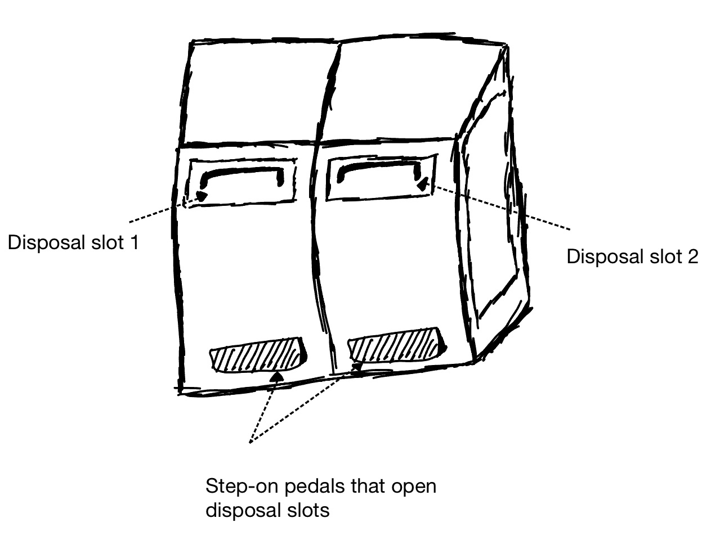
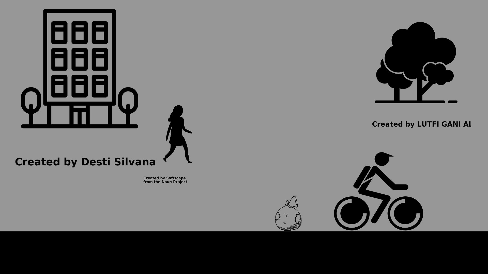
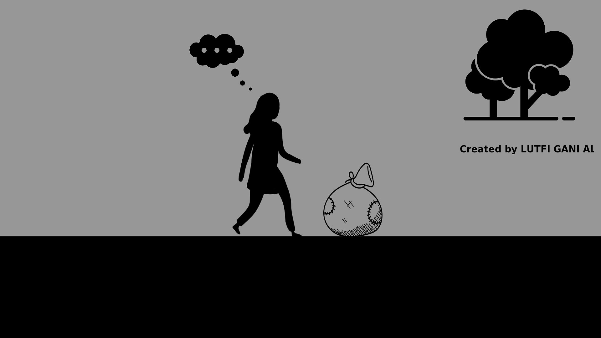
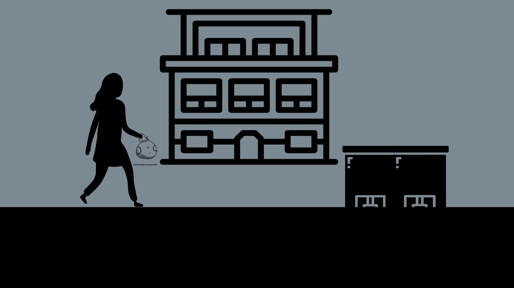
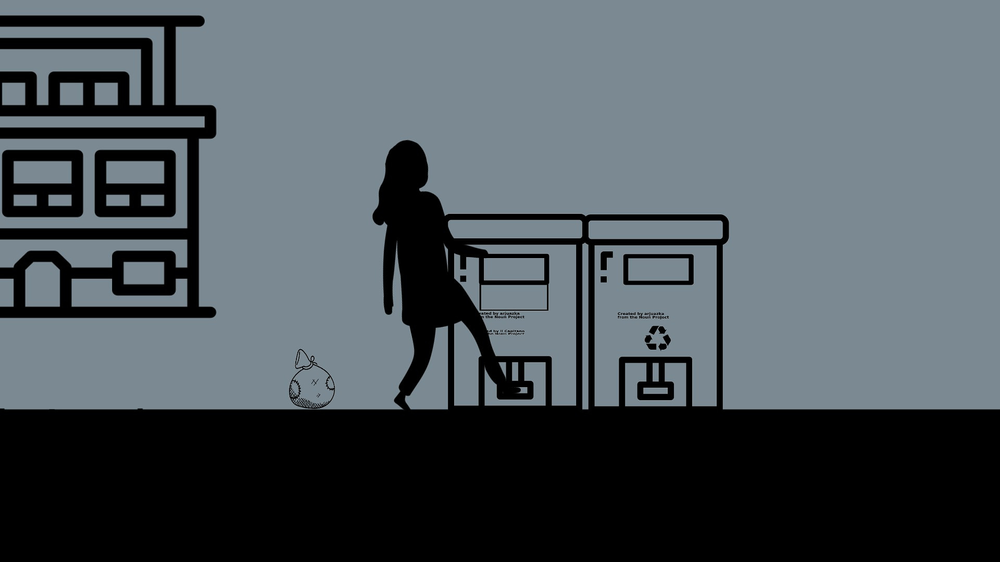
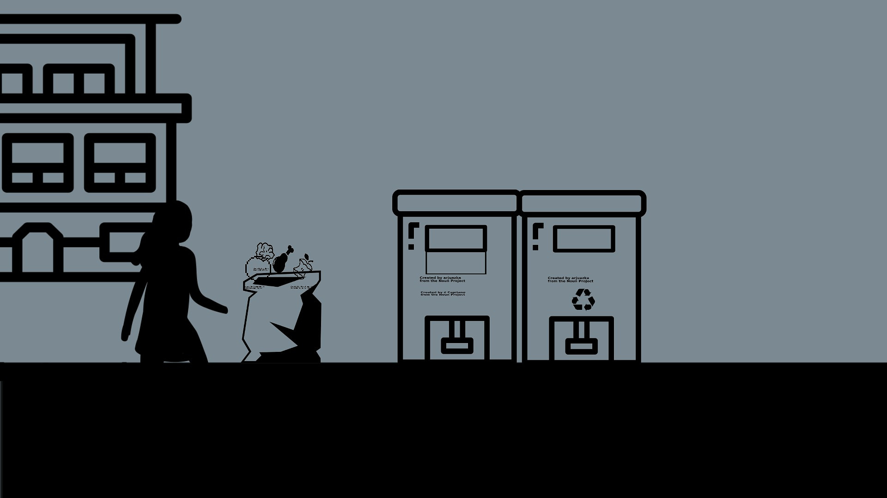
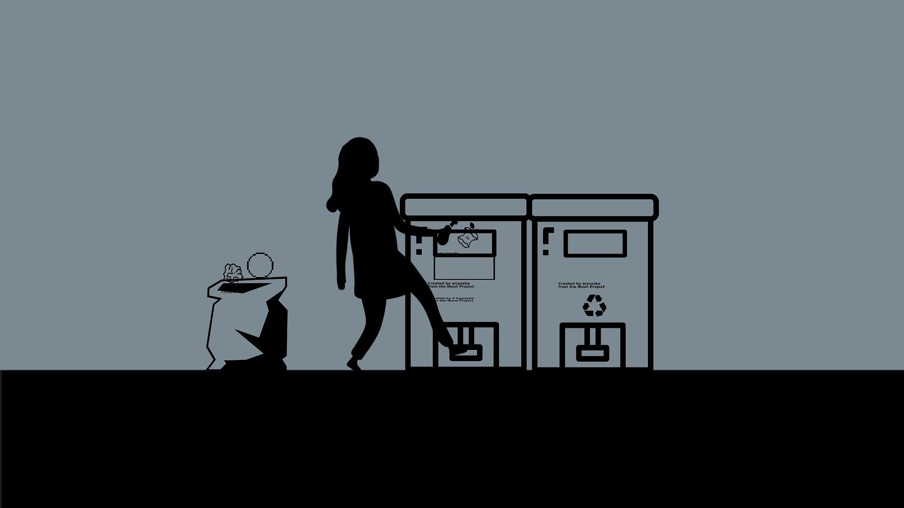
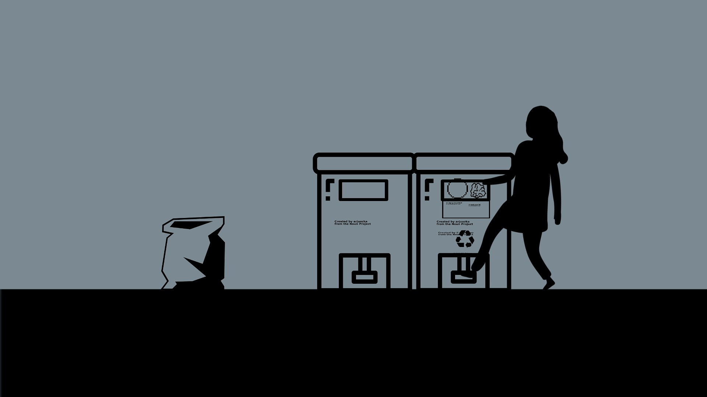
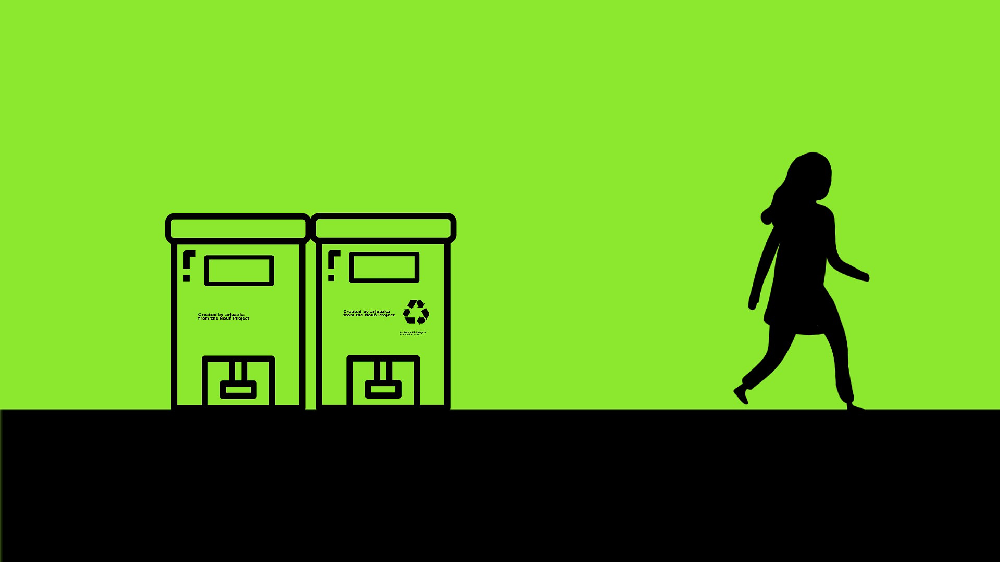

My chosen interface is the step-to-open trashcan found around Brown's campus. Pictured below

The step-to-open trashcans are quite intuitive and easily found around Brown's campus. The trashcan attempts to solve the problem of
having to touch a contaminated surface when throwing out trash. To do this, it employs a foot pedal that when stepped on
opens the disposal chute. A box-like compartment opens up and a user can place their trash inside. Then after depressing the pedal,
the compartment closes back up.
Observations
Users stepped on the pedal with their right foot more than with their left.
Users who appeared to be in a hurry would ignore the foot pedal and instead use the handle to open the trash can
Users had a tendency to step hard on the pedal… possibly due to past experience
Users kept their foot on the pedal while placing their trash into the trash can
Users with large trash items needed to shove their trash into the small compartment and this would prevent the slot from fully closing.
After this, the next user would be unable to use the compartment because the trash would remain.
Questions
How did you feel about the rate at which that trash can just opened for you?
Did you think it was big enough to fit your trash without much effort?
Was it comfortable to step on the pedal: On a scale of 1-10, how challenging was it to step on the pedal to open the trash can?
Was it comfortable to pull on the handle: On a scale of 1-10, how challenging was it to step on the pedal to open the trash can?
How often do you take the time to actually put recyclable material into the recycling part of the bin?
Responses Summary
Overall the rate at which the trash can opened wasn’t an issue to the people I interviewed.
They did note that they believed the compartment opened up was too narrow to comfortably place trash into.
They had to almost approach placing the trash inside from a particular angle
The pedal itself was not as wide as it could be. Users felt the pedal should extend more so a whole foot would press on it.
Interviewed users had no issues with the handle. The average difficulty rating for pulling the handle was 2.
The general consensus was that even though the recycling side was right next to the trash side,
users didn’t always make the effort to separate their waste material into the appropriate bin due to the awkward nature of having
to step to open one bin and then step again.
Empathy Maps: Introducing Joan and Kyle
Description: Joan is a sophomore student who works a part time job along with doing
research at Brown. In her space time, she advocates for sustainable
practices and being conscious of the environmental impact one has.
Interface Problem: Joan has a packed schedule so she's always in a rush.
She might find it difficult to take time to make use of the recycling section
of the trashcan when in a hurry.
Joan represents users I interviewed who are either very busy and have a packed schedule or enviornmentally conscious
Description:"Kyle is a senior varsity soccer coach at Brown University.
He's approximately 5'4 and has a broken right arm.
Interface Problem: Kyle is short with a broken right arm. This makes it difficult
for him to access the trash compartment without
needing to reposition himself at a certain angle.
Kyle represents a user that I interviewed who is short and also another user who has an arm injury.
Storyboarding

Joan is walking out of her research building when she spots a cyclist driving by at full speed.
As he speeds away, he unknowingly drops a bag full of trash

Joan approaches the bag of trash. She can't just leave it laying in the middle of the road. She begins to think about what to do.

Joan Spots the newly introduce trashcans. They are shiny and look pretty fancy. She approaches them

Joan investigates the trashcans. She realizes that when she steps on the foot pedal below, a slot opens up to place trash into.

Joan also realizes the new trashcans have separate sides for trash and recycling. She's really passionate about sustainability so she begins to sort the trash into 2 piles

Stepping once more on the foot pedal, Joan opens up the trash side of the bins. The slot is narrow and at an awkward angle. However Joan reaches up and shoves the pieces of trash into the bin

Then Joan does the same for the recyclable items. She steps on the pedal and places the items inside the narrow slot

At last, Joan is at peace. She has disposed of the trash correctly and hurries to her next class.